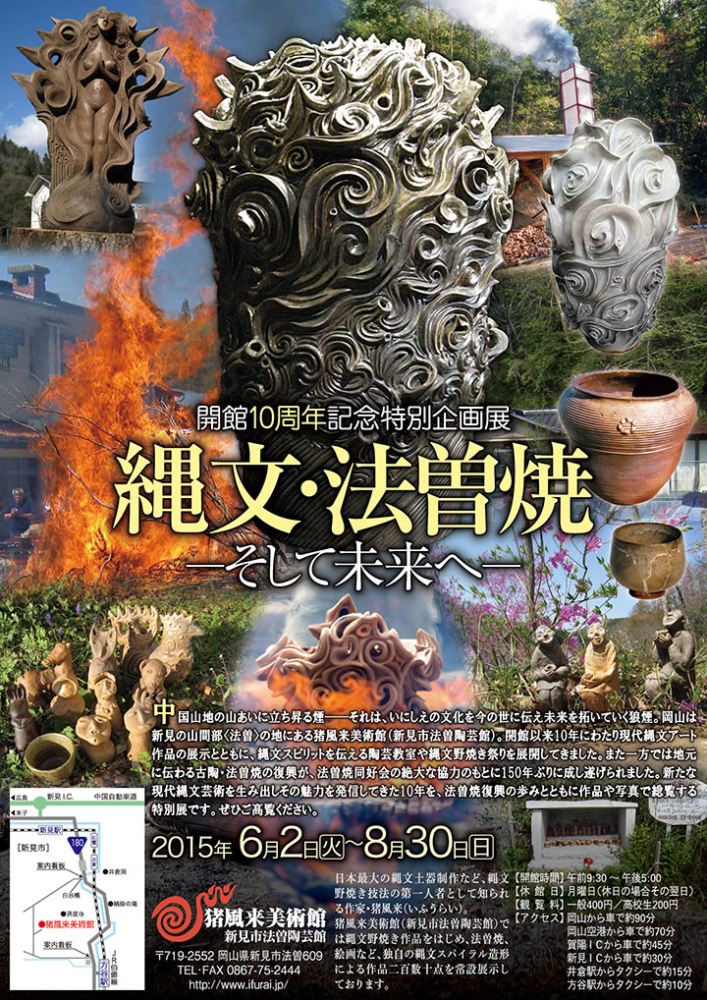

― お知らせ･活動予定 ―
-
■開館10周年記念 ARTs of JOMON in 新見 －現代縄文アートの世界－
【期 間】２０１５年６月１８日（木）～６月２８日（日）
【会 場】新見市文化交流館まなび広場にいみ小ホール -
■開館10周年記念特別企画展『縄文・法曽焼－そして未来へ－』
【期 間】２０１５年６月２日（火）～８月３０日（日） -
■鎮魂と復興を祈念して「縄文いのりの土偶」をつくろう
―東日本大震災への祈り―
 |
 |
| 【ARTs of JOMON in 新見 チラシ】 →PDF版を開く |
日本列島に一万五千年前より花開いた縄文文化が、近年世界から注目を集めています。
考古学での成果は縄文の実像を解き明かしつつあるとともに、その芸術としての造形美の存在を世界に知ら
しめています。
この動きは現在、絵画、彫刻、デザイン、陶芸、織物、音楽、映像、演劇、ファッションなどあらゆる領域
へと広がり、今日では縄文アートを志す多くの若き芸術家達が各ジャンルで活躍しています。
すなわち、縄文のスピリットとインスピレーションに感応して創作するアーティスト達の活動が潮流となり、
現代縄文芸術運動がいま大きく飛躍しようとしているのです。
ARTs of JOMON展は全国の主要な現代縄文アーティストが結集し、日本文化の根源である縄文スピリット
にもとづく現代縄文アート作品を展示し、全国―世界に発信するものです。
これまでに各地で展示が好評を博し、このたびメインアーティストの一人である猪風来の地元・新見市での
開催となりました。
現代縄文アートの新しい時代を拓く作家たちの作品をぜび高覧ください。
=∴=∵=∴=∵=∴=∵=∴=∵=∴=∵=∴=∵=∴=∵=∴=∵=∴=∵=∴=∵=∴=∵=∴=∵=∴=∵=∴=
■参加出品 全国の主要な縄文アーティスト（19名）
岡山県内の縄文作家（5名）
■特別展示 片桐仁作品特設コーナー
JOMO-T展（縄文をテーマにデザインしたＴシャツを展示）
メディアアート（縄文の世界観を醸成した映像作品を上映）
■公開制作 ライブペイント（縄文アーティスト3人による絵画）
6月16日（13：00 - 17：00）～17日（10：00 - 17：00）
渋谷忠臣・坂巻善徳 a.k.a sence／さかいひろこ
■オープニングセレモニー・キュレーターによる作品解説
6月18日 9：00 -
■縄文ワークショップ（各先着20名 参加費300円）
6月20日／21日 10：00 - 15：00
黒曜石のアクセサリーづくり（講師：草刈朋子）
縄文土鈴をつくろう！（講師：村上原野）
■主催 新見市・現代縄文アート展実行委員会
■企画制作 猪風来美術館・NPO法人jomonism
|  |
| 【開館10周年記念特別企画展チラシ】 →PDF版を開く |
中国山地の山あいに立ち昇る煙――それは、いにしえの文化を今の世に伝え未来を拓いていく狼煙。
岡山は新見の山間部〈法曽〉の地にある猪風来美術館（新見市法曽陶芸館）。
開館以来10年にわたり現代縄文創作作品の展示とともに、縄文スピリットを伝える陶芸教室や縄文野焼き祭り
を展開してきました。
自然と共生し、生と死と再生への畏怖と祈りの世界観が表現された縄文の造形。
その普遍的な根源力は世界的にも注目され、新世代の縄文アーティストたちを輩出しています。
また一方では地元に伝わる古陶・法曽焼の復興が、法曽焼同好会の絶大な協力のもとに150年ぶりに成し
遂げられました。
地元の土を使った新法曽焼作品は、日常使いの器からアートとしての縄文法曽陶作品まで幅広い可能性を
展開しています。
新たな現代縄文芸術を生み出しその魅力を発信してきた10年を、法曽焼復興の歩みとともに作品や写真で
総覧する特別展です。
ぜひご高覧ください。

|
このたびの東日本大震災による被災に対しまして、心からのお見舞いと哀悼の意を表します。
被害地の惨状と深い悲しみの中で、再起を期して心を奮い立たせている被災者の皆様への応援の気持ちをこめて
「縄文いのりの土偶」をつくりませんか？
古来より縄文の土偶は、豊饒を願い災難をはらい、鎮魂と再生を祈願してつくられたものです。
猪風来美術館では開館以来、「にぎり地蔵」として願い思いをこめた小さな土偶を、陶芸体験の皆さんに
つくっていただいてきました。
野焼きしたお地蔵さまは、一部美術館と済渡寺をつなぐ参道の祠におかれ、「野辺の地蔵さまロード」として
みんなの思いをつなぐスポットになっています。
２０１０年４月１６日に開催された「春の縄文野焼き祭り」の縄文体験コーナー「にぎり地蔵をつくろう」では
『震災地への思いや気持ちをこめて「縄文いのりの土偶」をつくり、被災された方々へ思いをつなげよう』
との趣旨で呼びかけをさせていただきました。
その際、みなさまに多くのご理解とご賛同をいただきました。
復興はおそらく、これから長くかかることでしょう。
そのため「縄文いのりの土偶」づくりの活動もまた、継続していきたいと思っております。
どうぞ御協力よろしくお願いいたします。
※ 参加費300円は全額、復興義援金として寄付させていただきます。
※ 制作された「縄文いのりの土偶」のご寄付をお願いします。
※ 後日縄文野焼きされた「縄文いのりの土偶」の安置場所は検討させていただきます。